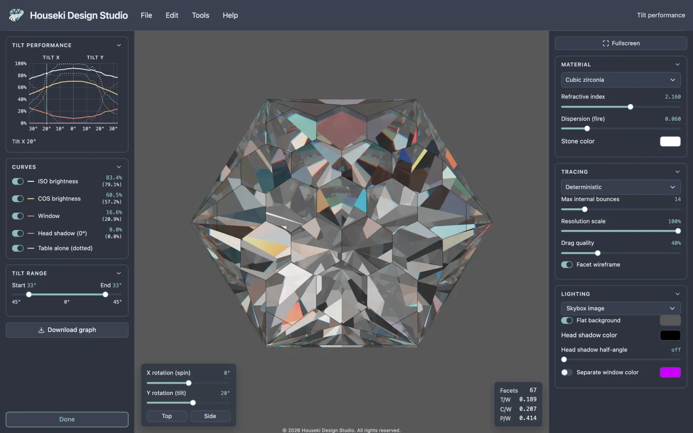
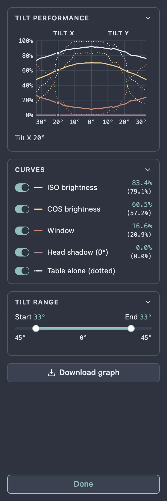
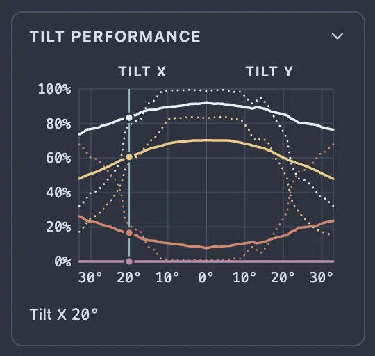
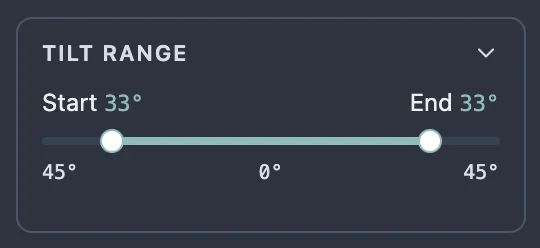
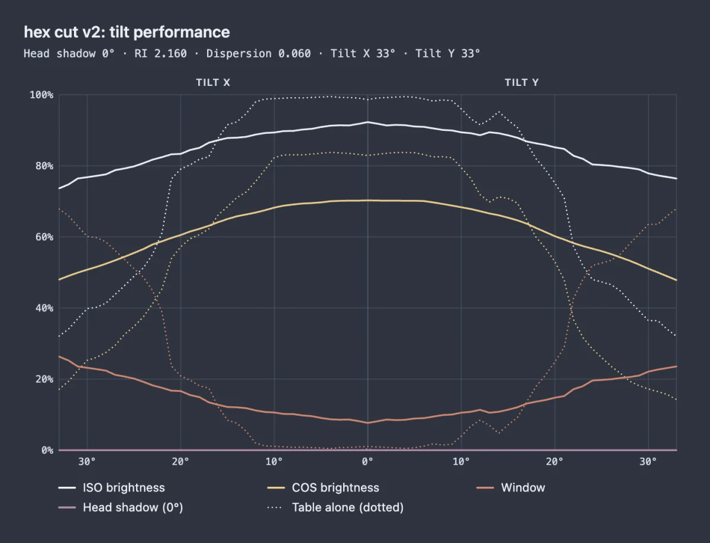

Most renders and photos of a cut are taken face-up, straight down through the table, but a stone set in jewellery is rarely looked at that way: it tilts as it is worn and turned. The tilt performance analyzer tilts the stone up to 33° one way, then back to face-up and 33° the other way, and graphs how much light the stone sends back to you at every degree. A design that stays bright as it tilts, without windows opening up, will look lively when it is worn.

Choose Tools > Tilt performance. It works on any stone, whether a design you opened or a plain .obj model. It is greyed out while another mode, such as editing a tier, is open; its tooltip then says which one to finish first.
As soon as it opens, the studio measures the stone at every tilt: first Tilt X, the stone tipping towards and away from you, then Tilt Y, the stone turning to the side. The line under the graph counts the tilts measured, with a bar that fills as it goes, and the graph appears when they are all done, usually within a second or two. The stone in the middle is not redrawn while the studio measures, so the measuring gets the computer's full attention; it turns face-up once the graph is ready.
Each tilt is measured on a picture of a fixed size, the same whatever the size of your window or screen, so the numbers can be compared between computers and between designs. The picture is never shown; the render in the middle is only there so you can follow along.

Like the cutting instructions, the pane is made of cards you can fold away by clicking their titles: Tilt performance (the graph), Curves and Tilt range. Drag the edge between the pane and the render to make it wider, and the graph grows with it.
The left half is Tilt X and the right half Tilt Y. Face-up is the brighter line marked 0°, and each half runs out to its end of the tilt range at the edge. Up the side is the share of the stone's face, from 0% to 100%. Each quantity is drawn twice: a solid line for the whole stone, and a dotted line for the table alone.
| Curve | What it measures |
|---|---|
| ISO brightness | How bright the stone looks with even light coming from every direction above it (the Isometric lighting). Higher is better. |
| COS brightness | How bright it looks when the light is strongest from straight behind you and fades towards the horizon, like overhead light with you looking down. It rewards light returned from near your own direction. Higher is better. |
| Window | How much of what you see comes through the stone from behind it instead of being reflected back to you: the washed-out, see-through patches. Lower is better. |
| Head shadow | How much of the light the stone would return is blocked by your own head. The angle in brackets is the Head shadow half-angle setting in the render settings; at 0° this curve is flat at the bottom. Lower is better. |
ISO brightness, window and head shadow add up to 100%: every bit of the stone's face is either returning light, showing what is behind the stone, or reflecting your head. A dip in the ISO or COS curve is usually explained by a rise in the window or head shadow curve at the same angle.
The switches in the Curves card show or hide each curve; Table alone (dotted) shows or hides all the dotted ones. The dotted lines stop where too little of the table is in view to measure.

Once every tilt has been measured, move the pointer over the graph: a line follows it, the stone in the middle turns to that tilt, and the value of each curve at that tilt is shown beside its switch, with the table's value in brackets. While the graph is still being measured, including after you change a setting or widen the tilt range, pointing at the graph does nothing and the stone stays where it is. Touch and drag does the same on a touch screen.

The Tilt range slider sets how far the stone is tilted. Its left handle is the Start, how far Tilt X goes, and its right handle the End, how far Tilt Y goes. Both start at 33°, and each can be set from 5° to 45°. Drag a handle, or click it and use the arrow keys.
Every tilt measured is kept, so widening the range measures only the new tilts, and narrowing it redraws the graph straight away without measuring anything. The range is kept if you close the tool and open it again, until the page is reloaded.
The stone is measured with the Refractive index, Dispersion (fire), Max internal bounces and Head shadow half-angle set in the render settings, which stay on the right while the tool is open. Change any of them and the graph is measured again once you let go of the slider: for example, set a wider Head shadow half-angle to see how much more of the stone your head darkens. The stone is always measured as a colourless stone, and with the deterministic renderer, whichever renderer you are viewing with.

Click Download graph to save the graph as a PNG picture. It shows the curves that are switched on, in the colours of the theme you are using, with the design's name, the settings it was measured with and a key to the curves. Where your browser supports it, you choose where to save it; otherwise it goes to your downloads folder.
Click Done at the bottom of the pane, or press Esc. The cutting instructions come back, and the stone returns to the view you had before. Nothing in the design is changed, so there is nothing to undo; Undo and Redo do nothing while the tool is open, and the design cannot be edited until it is closed. If you switch to fullscreen while it is open, the pane is hidden with the cutting instructions; the first Esc then leaves fullscreen, and the next closes the tool.